TOOLKIT: Blender 3D, Unity
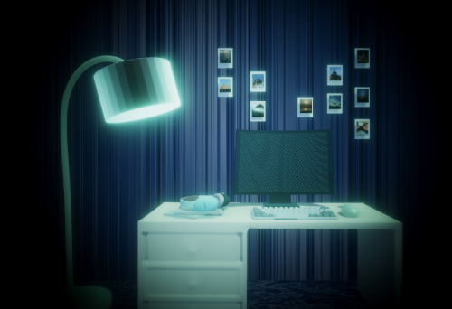
Our memories are the accumulation of a lifetime of experience and in this sense, our memories are who we are. These memories consist of the places, people, and things we interact with in our day-to-day lives. Computerized Memories is a fictional 3D environment that draws parallels between human memory and computer memory, asking where human memory ends and digital memory begins, and comparing how humans and computers store and retrieve information. Through a speculative lens, it maps four memory dimensions: connection, compartmentalization, cognition, and consolidation.
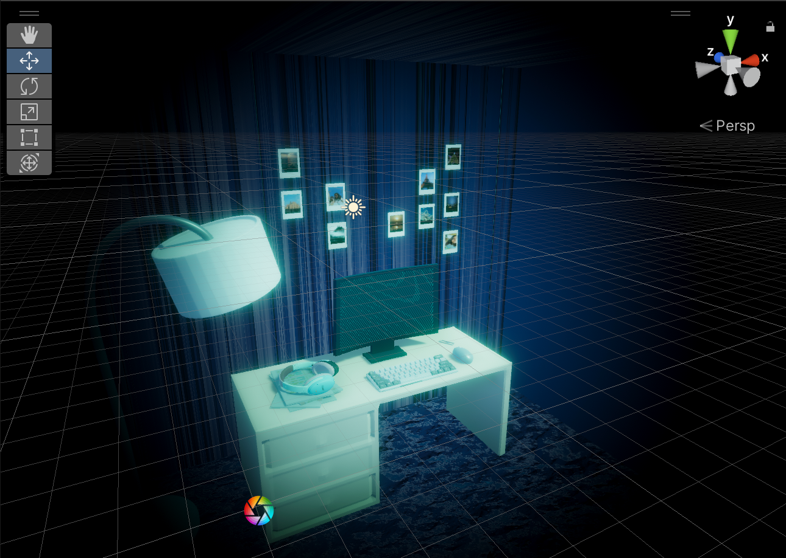
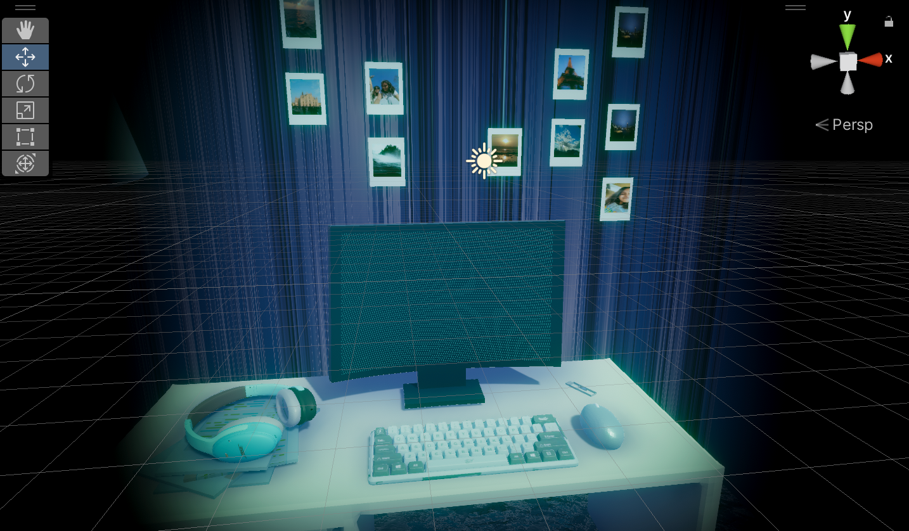
It begins with a scene focused on a desk, surrounded by elements that evoke a person’s memories. In this case, my memories. The walls are lined with photographs that hold memories, from places visited to moments shared with friends and family. The desk is scattered with personal essentials: a computer, notes, headphones, and other objects that reflect daily habits. The scene introduces you to the protagonist of the world. The protagonist of the story isn’t me. It’s the computer.
Sitting at my desk one day, I began thinking: How does a computer form its own memories? What would the memories of a computer look like? How do human memories get translated into digital memories? Delve into this world to take a closer look at the inner experiences and memories of a computer. Begin by clicking on the computer screen to enter the computer’s brain.
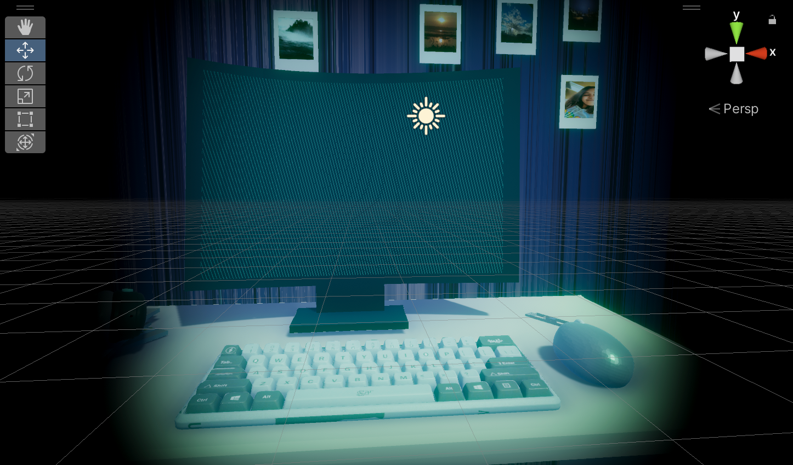
As you enter, you find yourself in a digital landscape where memory takes physical form. Cubes float in seemingly random patterns, each holding a fragment of experience—this is how a computer stores information. Unlike human memory, these cubic structures stand alone, unnamed, and isolated.
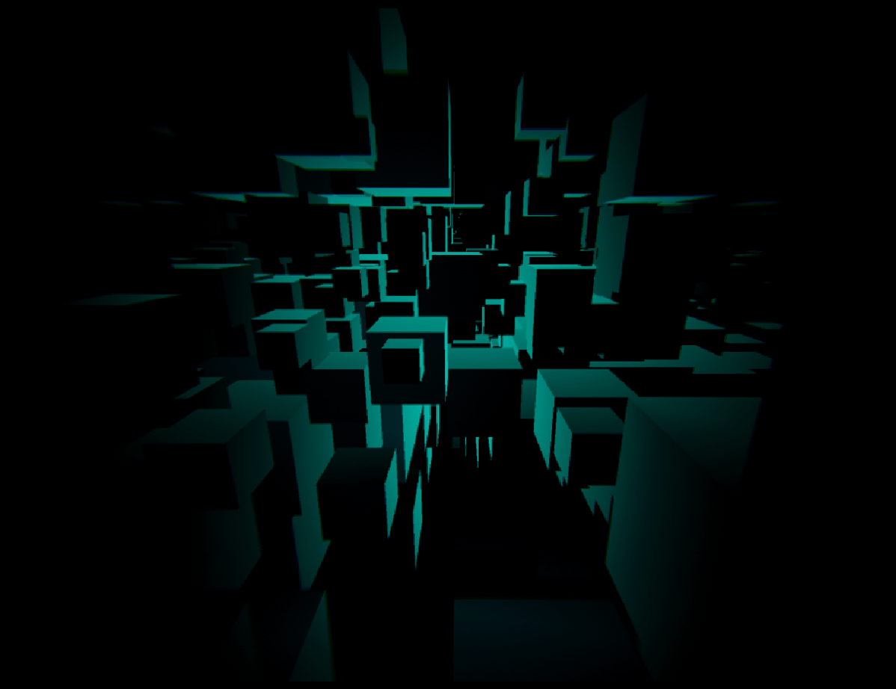
But as you move deeper, something shifts. The second scene reveals fractals—intricate, branching patterns that mirror the circuitry of RAM. Yet these patterns also echo something profoundly human: the synaptic connections between brain cells. Here, the boundary blurs. Both computer and human memory rely on connection, on the linking of one point to another to form meaning.
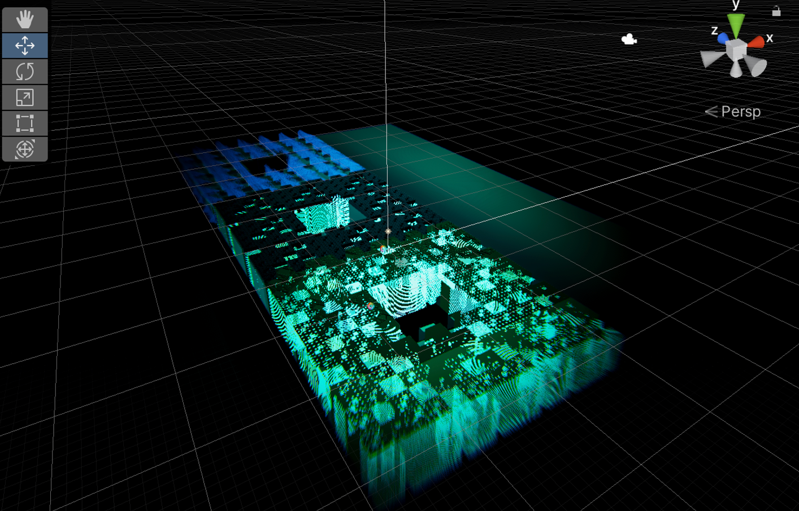
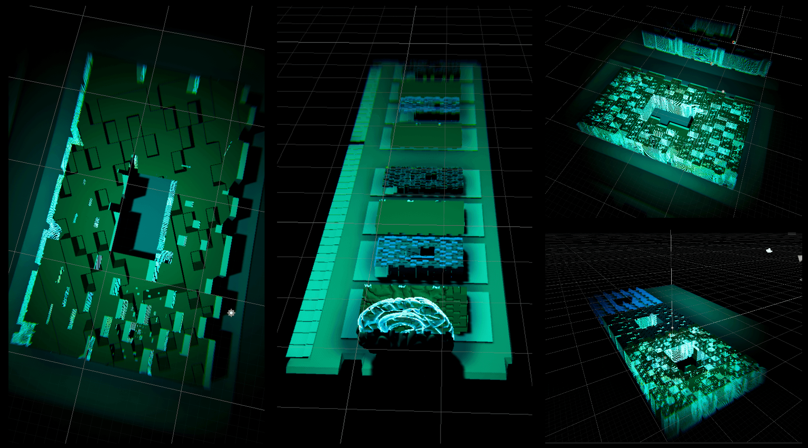
The experience asks: how does a machine remember? When you open Spotify, the computer recalls how to process audio. When you search on Chrome, it retrieves protocols for accessing the internet. When you use the calculator, it performs operations drawn from stored functions. But these aren't memories in the way we understand them—they're automated responses, triggered by input. A computer does not reflect on the song it played yesterday or wonder about the question you asked last week.
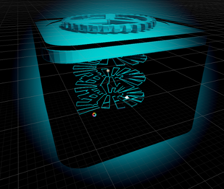
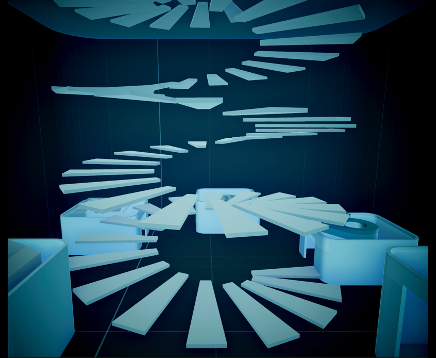
Human memory, by contrast, is messy and emotional. It consolidates over time, transforming experiences into something permanent that shapes who we are. The final scene moves you into the computer's control center, where traces of your actions remain. But are these traces truly memories, or merely logs? The computer holds evidence of what happened, but does it remember?
The journey explores compartmentalization through cubes, connection through fractal patterns, and cognition through app interactions, converging on consolidation: how memories become permanent, and how differently that may happen in humans and machines.
The interactions and 3D environments were created using Blender and Unity with the materials rendered through node-based programming.
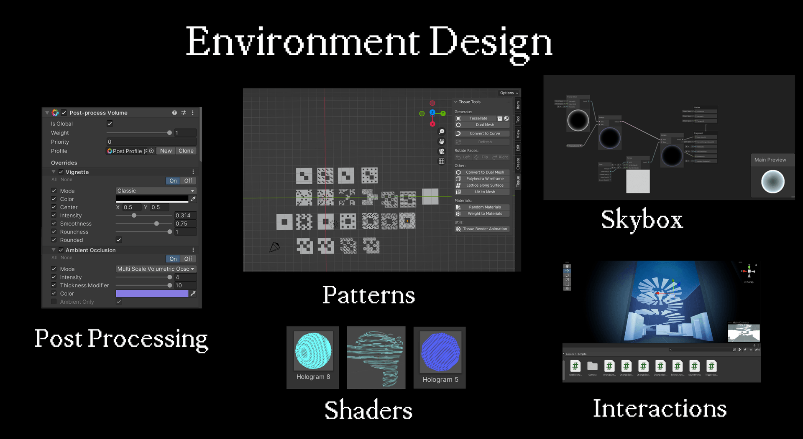
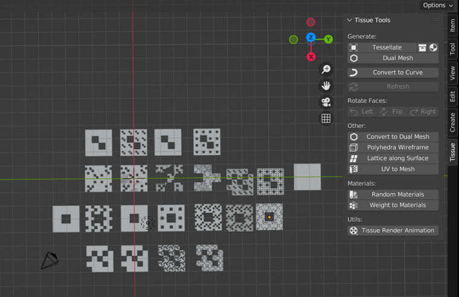
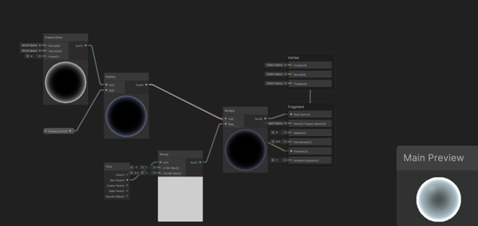
To understand this idea, it helps to look at how computing has evolved. Early on, “human computers” performed complex calculations by hand, often for science, engineering, or navigation. Over time, mechanical and then electronic machines took over more of that work, leading to the automated computing we rely on today. These systems are now embedded into almost every part of life. As technology becomes indispensable, the line between human and machine memory blurs. We are left to wonder—are we losing parts of ourselves to the computer? Where do our memories end, and the computer’s begin, and can digital records ever replace the cognitive memories that define our humanity?
This reflection on the intersection of technology and memory serves as a poignant reminder of the ways in which computers are reshaping our understanding of what it means to remember, to think, and ultimately, to be human.
Previous Project